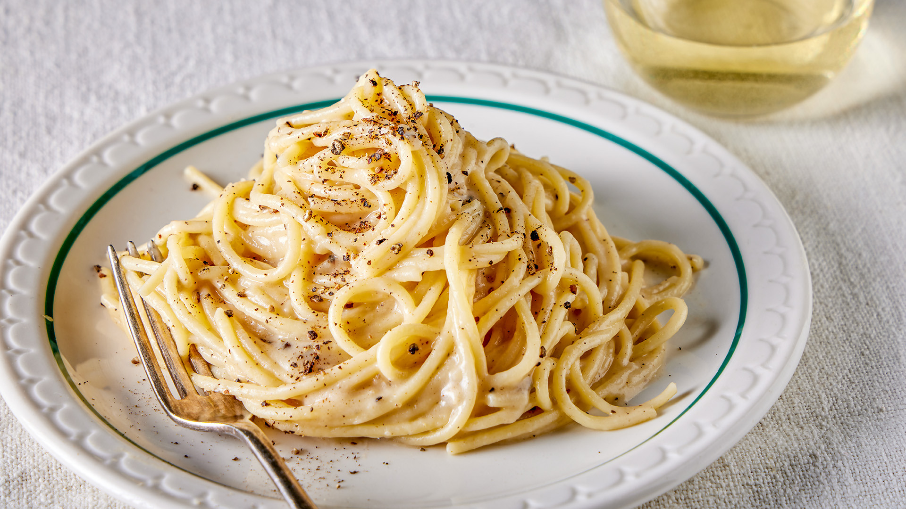

Cacio e Pepe

Description
Cacio e Pepe is classic Roman pasta that only contains a few ingredients. Despite seeming simple it can still require some technique to pull off. If done correctly it is an incredibly delicous pasta.
Ingredients
- Pasta: use a thick type such as Bucatini
- Pecorino Romano: Parmigiano may be substituted
- Butter: though non-traditional it can add a nice flavor to the dish
- Black Pepper: make sure its finely ground
Steps
- Boil the pasta water. Fill a large stockpot about halfway full of water (roughly 3 quarts) and bring it to a rolling boil. Generously season the water with fine sea salt (about 2 tablespoons).
- Bloom the pepper. Meanwhile, as the pasta water heats, melt the butter in a large sauté pan (preferably nonstick) over medium heat. Add the pepper and let it cook for 30 seconds, then turn off the heat. If you have an electric stove, you’ll want to remove the pan from the hot burner entirely.
- Cook the pasta. Add the pasta to the boiling water and cook, stirring occasionally, until it is just barely al dente.
- Toss the pasta. Use tongs to quickly transfer the pasta directly to the sauté pan with the melted butter and pepper. Add 1/3 cup of the starchy pasta water to the pan and toss the pasta briefly to combine. Add in half of the cheese and toss the pasta briefly to coat. Add in the remaining half of the cheese and continue tossing the pasta, adding in a few extra tablespoons of starchy pasta water if needed to thin out the sauce, until the cheese is melted and forms a smooth and glossy sauce.
- Serve. Serve the pasta immediately, garnished with an extra twist of black pepper and/or extra Pecorino if desired. This pasta is definitely best served hot out of the pan, so please enjoy it right away!